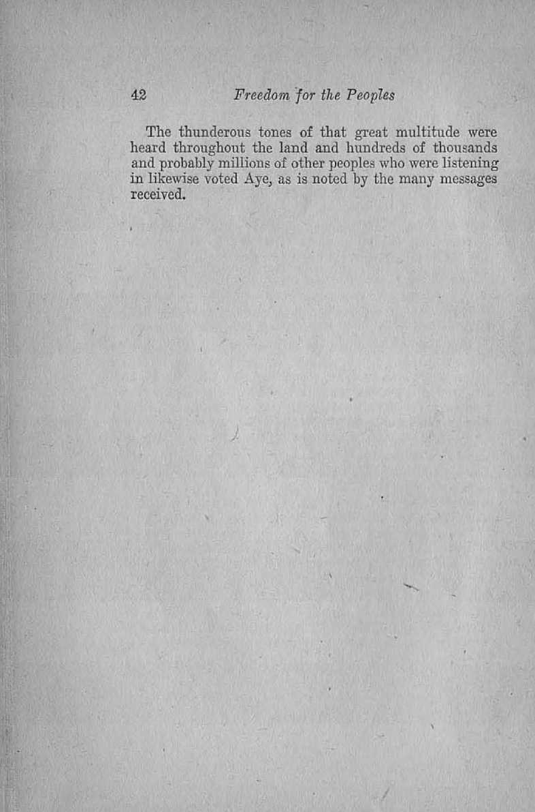
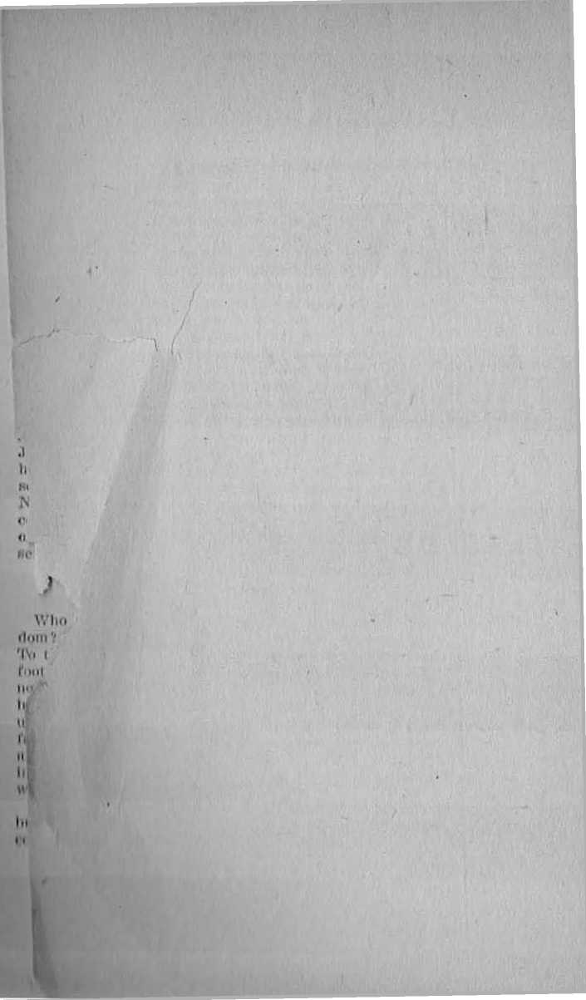

By J. F. Rutherford, President
International Bible Students Association
t
Author of
Deliverance!
The Harp of Gad
Comfort for the lews
Million* Xoir Living Will Never Die Comfort lor the People Where arc the Dead!
etc., etc.
If ADE IN V. S. A.
Published and Copyright 1927 by
International Bible Students Association Brooklyn, N. Y. LJ. S. A.
Also; London, Toronto, Melbourne, Cape Town, Stockholm, Magdeburg, Berne, Copenhagen, etc.
FOREWORD
HpIIE liromh n.diii; of .Inti,, i; 11 he i ford's lecture by a ihr N,iin>iml r.run i. i in> Company was eon-even by our ■ । < mil'. Io Ur the greatest hook-up of brondi'ftbt.iiig on earth. The nsponse by the people has been phcimnu rial. So grmt Im been the demand for copii-i thereof 11 mt w. Imvr del. a mined to issue it in the choiipij pm .ihlc form " ilmf the poor may have it. Il Voices n <|ei limit ion of im|. priulrnrc of the peoples of Christendom from (lint unholy alliium that has so long oppressed them.
We append hereto no inlrodiirlory chapter setting forth some of the til'. rii ■ ..t Ilir rnminmi people, also a concluding chapter i.lmwlng the S«riptunil reason for the panning »twny "f Ihr W. rid I’owrt'-. doth were written by Judge. Kutin i ford. You will rrnd this booklet with great hderr. I. Yun will wiml. to keep it in your homos and Aad il. Io your i hihlirn.
The I’tihlishr-r
CHAPTER 1
THE common peoples of all nations have suffered great oppression. Their real defenders have been very few. By the common people are meant those of the rank and filo who labor with their hands and thereby produce the wealth of the land. There was a time when America was said to be an asylum for the oppressed. That day has gone! To what country could the common people now flee and find protection, aid, peace, ■ freedom of speech and freedom of action ? There is none under the sun!
The World War has furnished the common people of Christendom with much food for thought, and they are thinking as they have not heretofore thought. They are beginning to realize that they must think and act for themselves. They have been deceived for a long time by those upon whom they relied. They cannot be deceived always. They were told by those who represented selfish interests that the Great War would make the world safe for democracy. The result has been the very opposite. With the ending of the World War practically all the liberties of the common people have been taken away. Big Business and professional politicians, aided and supported by faithless clergy, have fastened the shackles upon the wrists of the common people. They continue to suffer and they are seeking the way of relief and freedom. As an illustration of some of the things suffered the following is here related.
Z' In June, 1914, in one of the northwest, states of "Tree” America, lived Jacob Christmann with his wife Martha, . Elsie his only daughter, and two sons. William and John ' Christmann,’ twins. That: was a happy family. Their
acreage. was small but rich, and yielding to their hard labor produced a sufficiency for them. Because; of the manipulation of the markets they found it difficult to sell their produce at much profit; yet. they were. able to get on, and they had the love and sweet companionship of each other, and hence they were content.
Jacob Christmann was horn in Germany and em-igmted-tP^F'America when a mere lad. His older brother, Henry; Christrnann, remained in Germany, married there mid reared several sous and daughters. Martha MacDonald was born in Scotland and came to America with her parents. She became the wife of Jacob Christmann and the mother of tho above named Christmann children. Gilbert Mm llonajd, a brother of Martha, resided in ScotlantT’E'is native land and there reared a family of sons and daughters, among them Gilbert Jr, ■
The three Christmann children in America from time to time exchanged letters with their cousins in Germany and in Scotland. For some time prior to 1911 the war lords of Germany made it so burdensome for the Christmann hoys that often they wrote their American cousins of their purpose to come to “free” America, to live and thus escape the war and the bur-den of the war machine. The American cousins spoke often with their parents about their kinsmen across the sea, and of course there was a great desire for personal acquaintance.
In August, 19.11, the World War begp.p. and the Christmann boys of Germany wercTmrried to the front and, of course, that precluded their visit to America. At the same time the British entered, the war and among those sent out to fight Germany was GilbcrLAlac-Donaiflj Jr., the young Scotsman. It was therefore blood relation sent out to fight blood relation in a deadly combat and that without the desire or consent of either one to fight the other.
After much agitation by
D&IJfiSSJl&d. hijnd preachers America entered the war in . 1917. At the instance of Big Business a conscription law was quickly enacted, by the American Congress. Thereafter young Americans were not asked if they wanted to fight but were told they must fight or take the consequences, which consequences usually were imprison-nrent and cruel and unusual treatment at the hands of the prison keepers. A.ij\0Jig those drafted early in the war by America were the, cEr'sffmann'twins,' William and" 3"qh’m ’ A’pall of blacknessTeTTover "Bie modest and tmee happy home of the Christmann family. The two boys were torn away from their parents and their only sister. They were sent to war together and they tried to stay together throughout the war. Upon the battlefields of France they saw much real military sendee.
For more than forty hours the groat battle between the Germans on one side and the. British and their allies on the other had been raging furiously. A fresh American division was sent to the front to relieve the rernain-ing men in the shattered lines of the allies, and in that 4-merican division which went forward were tfie^two privates,, Williajp 'ami Tplm'* Cliristinqnh. A'cliarge was ordered ; and the Cnristmann boys, together with thou- ' sands of others; obeyed the command. William came t' suddenly upon a German soldier lying upon the ground. \ and drew his bayonet to strike him through; but seeing that the German was already mortally wounded William did not strike. The dying man looked with pleading into the face of William Christmann, who moved ■with sympathy gave the German water from his own canteen. The drink revived him. The wounded man then addressing William said; “1 am dying. Why have we .
fought? I bad nothing against the French or English >
and surely not against the Americans. I have some dear cousins in America that I Tove much.’1 Thon William inquired: "Who are your American cousins?” The
German replying in broken speech convoyed the message to William by which the two men learned that they were ; cousins, who had often com mi mica ted with each other by letter. William’s brother John was near by, and seeing his brother with a Herman rushed to his side and learned the real cause. At that moment a ball pierced William. The two cousins, knowing that they had but a few moments to live, affectionately embraced each other and died in each other’s arms.
/’ Later the official report came to America which merely read: William Ghristmnnn, killed in action. The sad / information was conveyed to his •mother. Sho. died from
a broken heart. Il was afterwards learned Ihat in that same engagement Gilbert MacDonald, Jr., the Scottish \ cousin, was also killed.
The Christmann homestead in America was mort
gaged. The family had depended upon the two sons to pay the interest. The mortgage was held by a loan company, -financed by a few multimillionaires who produced nothing but required much of the produce of the farm to pay their usury. The mortgage became due; and no one of the Christmann family being able to pay the interest or principal, it was foreclosed. Jacob Christ-mann and his daughter Elsie were compelled to leave their home. No information had yet come as to the fate of John Christmann, the other twin son. The war ended and broken regiments of soldiers began to return. But John was not with them.
Jacob Christman was a member of the Lutheran
church. The minister of that church denomination where his membership was held had been among those who preached the boys into the war and aided and abetted in the enforced draft. It was difficult for Elsie to understand how he could be a minister and consistently take that course. Elsie and Tier father had now found a modest little house for I heir temporary residence. They anxiously awaited some information as to John, hoping that he had survived the terrible war. Many hours of sad reflection, were passed by her and her father. She came upon him on one occasion and found him reading the Bible. Sire plied him with a number of questions amongst which were these: “Does not America claim to be a Christian nation ? Is not Great Britain also one that lays claim to being a Christian nation? Have we not always understood that Germany claims to be a Christian nation ? Do not all these nations claim to serve and follow Christ, the Prince of Peace?. How can these nations and the preachers in their churches claim to be Christians and yet advocate war and compel the people to go to war and fight and kill each other and to kill their own blood relatives and that against their own wish and consent?”
The oppression upon this poor soul and the bitterness that she had suffered caused her to propound these questions to her father. She further said to him; “Father, who is responsible for this terrible war and for the dreadful sorrow that has been brought upon us? Can you support a church winch claims to follow Christ and which participates in bringing upon us such burdens of sorrow?” The father of course was unable to answer the question. He, too, was suffering great bitterness of heart and was seeking consolation in the Word of God. He had not found it in the church. The burdens of oppression and sorrow became too great for him; and shortly thereafter Jacob Christmann died; and Elsie, alone, with no one to care for her, drifted away.
.• The terrible fate that befell the once happy family of \
1 Jacob Christmaim has befallen thousands of other homes... .And what became of John Christmann? When thet
' hospitals began to give up their inmates, as the grave ] some day will giyjg .ujojEE^o, John .whrought-forth.
He"was’‘I)l'md, one arm gone, and his feet so mangled I that he moves about only with the aid of crutches. He is a helpless cripple so. far as there is ability of man tor.
f , , . ,
'aid him. Millions of other young men in Christendom ■.are in this same condition. They have suffered and continue to suffer, daily dying. Added to their bodily pain is the mental anguish that this condition was forced upon them.
Responsibility for the war
Did tho common peoples of the nations of earth vote on the question as to whether or not they should go to warp No, not one of them! Did any one explain to the common people the necessity for the great World War of Christendom? No one! Who then is responsible for the war? A few selfish and ambitious men desiring to increase their power were willing to hurry millions of human beings into death in order to accomplish their purposes. A petty excuse was seized upon for declaration of war, and the war began. Big Business constructed the machinery for the war and furnished the initial money necessary to do so, knowing that they would reap a thousand percent in return. The professional politicians enacted conscription laws to make the war machine work. The dishonest and faithless preachers of various religious denominations, while claiming to follow Christ, urged the people into war and acted as war agents. Hypocritically they preached war from their pulpits. In many instances they were paid for so doing by the big financiers who desired the war for private gain. The common people were forced by them to bare their breasts to shot and shell and to have their property and their lives taken away in order to.satisfy the wicked and selfish ambition of men. The people are beginning to see these things more clearly. There is reason now for the common people to think.
RESULT
What is the result of that World War? Everybody knows that it has resulted in the destruction of the democracy of the land and the taking away of the freedom of the people; and that it has resulted in a new. crop of millionaires in whose thoughts God finds no place. It has also resulted in great corruption in the high political offices and has proven that the clergy have denied the name of God and Christ and that they are forsaken by the Lord. It made it possible for selfish men, high financiers, bootleggers, and preachers to fasten upon the people a hypocritical and cruel prohibition law which both the clergy and “Big Business” insist on enforcing against the common people while the “High ups” openly violate it themselves. Men in high places make and dispense illicitly intoxicating liquors. If one of the common people is found in possession of a small quantity he is severely punished. The unholy alliance maintains customs officers at the border principally in the United States to browbeat and insult innocent, men and women and to ruthlessly destroy their property, abuse and humiliate them without even the semblance of a cause ot excuse. The war was seized upon as an opportunity by the Devil and his unholy agencies to fasten the shackles tighter and tighter upon the arms of the people and take away their liberty.
Democracy means a government of the people, for the people, .and by the people. No such government now exists in what is called “Christendom”. On the contrary in the land fraudulently called ‘'•’Christendom” the government of the peoples is by the unholy alliance of “Big Business” and Ing politicians supported by big preachers, and in the interest of the unholy alliance and against the interests of the common people. The oppression does not stop there.
Millions of money raised by oppressive taxation from the common people are being expended in further preparation for war. The common people of no nation on earth desire to fight the common people of another nation.; hut the selfish ambitious men, few in number compared with the multitudes, are the ones who prepare for war. compel the common people to hear the burden thereof by unjust taxation and the further burden, oppression and suffering by laying down their lives upon the battle-field. Is it any wohder then that the common people now are beginning to ask themselves: What good has Christendom brought to us? Can we ever hope or expect to have any relief from out burdens brought to ns by or through Christendom? They are seeing and seeing plainly that. Qhristendom so-called is a fraudulent name used to deceive the common people and hold them in subjcc’tion.
Is it possible then for the common people to ever have relief and freedom from any source? Yes; there is one absolutely certain way and about that way the people must now know. The time is at hand for the great God of the universe to hear the cries of the common people and to act in their behalf. It is plain from his Word and from the facts before us that his due time for the people's relief has arrived. It is therefore the time for him to first give the people some knowledge of his purpose.
HAGIO
No man has ever been able to explain what radio is. II is an unseen power by which the human voice is carried through the air and a message given to others in the far distance; but what it is man cannot say. Certain it is that God provided the radio because he foretells it in his Word written by the prophet centuries; ago. (Job 38: 3b) 'The due time must come, in the unfolding of his plan, for the use of the radio. That time has come, and God will rise it for the benefit of mankind. God has repeatedly used human agencies to carry out some of his purposes. It should lie expected therefore that God would use some human agencies to proclaim to the people at this time his purposes concerning them ami that he would use the radio in connection therewith.
Those men and women who are'wholly and entirely devoted to the Lord naturally would be the ones whom the Lord would use as the witnesses. In his Word it is written concerning such: tfYe are my witnesses, that I am God.” (Isaiah 43:10, 12) The truth that is proclaimed is not man’s truth but it belongs to God. "Thy Word is truth/’ (John 17:17) The Lord has made it clear that lie will not always turn a deaf ear to the cries of the common people. It seems certain that his due time is here to give ear to their cry.
ARRANGEMENTS TO BROADCAST
The International Bible Students Association is not a religious organization. A religious organization is composed of men and women who observe certain forms and ceremonies in the acknowledgment of a supreme power. The International Bible Students Association is made up of a body of men and women who are Christians, fully consecrated to do the Lord’s will. Of course there are some amongst them who are not wholly devoted to the Lord, while many of them are completely devoted to God and his cause. These Christians have come out f rom denominational systems because they love the Lord and waut to serve him. They have no selfish purpose to accomplish. Knowing that the relief of the people and their blessings must come from Jehovah God these Christians are anxious to tell their fellow men about God’s gracious provision for such blessings. A real Christian is one who follows Christ. The purpose of Christ on earth is expressed in his own words; "To this end was I born, and for this cause came I into the world, that I should bear witness unto the truth.” (John 18:37) All true followers of Christ therefore must likewise be witnesses to the truth. They must tell the truth in the love of the truth and for the love of their fellow man. This being God’s due time to have the witness of the truth given all loyal Christians desire to have-a
part in giving that, witness. They want to please God and they know that to please him they must do his will. (Matthew 7:21) It is the will of God now that al] nations of Christendom be told about God's kingdom. (Matthew 24:14) True Christians are faithfully endeavoring to obey this command of the Lord.
The International Bible Students Association held its annual convention for 1:27 at Toronto. Canada, from July 18th to the 25th. Christians came from many countries to attend this convention and to participate in giving the witness to Jehovah’s name. A short time prior thereto nt a hearing before the Federal Radio Commission at Washington, D. C.. a condition arose which led to the completion of an arrangement to broadcast an address by the president of the International Bible Students Association from the Coliseum at Toronto. It came about in this manner: During a hearing before the Commission the president of the National Broadcasting Company. Mr. Aylesworth, was on the witness stand testifying in behalf of that corporation, which operates three chains of radio stations in the United States. He was being cross-examined by the president of the International Bible Students Association. A question was propounded to Mr. Aylesworth as follows: “Your purpose is to give to the people by radio the message of the greatest financiers, the most prominent statesmen, and .the most renowned clergymen of the world?" To this Mr. Aylesworth answered in the affirmative. Another question was propounded to him: “If you were convinced that the groat Clod of the universe will shortly put in operation his plan for the blessing of all the nations and families of the earth with peace, prosperity, life and happiness, and that the great Creator desired that this message be broadcast would you arrange to broadcast it?" The answer was in the affirmative and led to an offer by the president of the National Broadcasting Company to broadcast the address
of the president of the International Bible Students Association. The arrangement was made to broadcast from Toronto, as above stated.
The attending facts and circumstances show conclusively that the Lord made it possible for such a broadcast. No association nor any man could have arranged it. It was the Lord who did it for his own glory. By means of telephone wires fifty-three radio broadcasting stations were tied together. The address was delivered at the Coliseum at Toronto, transmitted by wire to radio station WEAF, New York City, and relayed to other stations to the number of fifty-three, reaching from IInine to California, and from Canada to Mexico, and including two super-power stations which easily reach Europe, South Africa and Australia. In the language of one of the New York dailies it was “the greatest hookup in radio history”. It was the means adopted to quickly give a witness to Christendom of facts which they know to be true when they hear them.
On that occasion the president of the Association presented to the convention a resolution which is really a message to the peoples of Christendom. His address was in support of the resolution. He emphasized the following points, to wit: That Jehovah is the only true God; that Christ Jesus his Son is the Bcdeemer and Savior of man and the rightful King of earth; that there is a true Christianity composed of those men and women who faithfully represent God and Christ; that there is a false, deceptive and fraudulent organization called "organized Christianity” or “Christendom” which misrepresents God and in fact represents the Devil; that God created all men of one blood to dwell upon the earth and that there is no just cause or excuse for them to engage in war; that the ruling factors of “Christendom” which in fact constitute “Christendom” are, to wit, high financiers, professional politicians, aided and supported by faithless clergy; that this unholy alliance produces nothing but lives upon the honest labors of the common people and the common people have long been oppressed by carrying such as a burden ; that the ruling element provokes war between nations for selfish reasons and compels the common people to go to war and fight and kill each other without any cause or excuse : that the people have long been oppressed and have suffered untold misery nt the hands of the rulers in Christendom and that without the support of the common people Christendom could not stand: that the time has come when the common people must forsake and for ever abandon the fraudulent system of Christendom and give allegiance to God and to Christ; that the kingdom of heaven is at hand and that through God's kingdom the people will receive their heart’s desire, namely, peace, prosperity, life, liberty and happiness; and that through his kingdom the burdens of sorrow will be lifted from the people, and they will be given joy and health, strength and life.
So convincing and heart-cheering was the address in support of the resolution that the great audience amidst tremendous enthusiasm arose and unanimously adopted the resolution, which resolution, together with the address in support thereof, is set forth in the next chapter.
Since the adoption of the resolution and the delivery of that address thousands of letters and telegrams have been received from every quarter of the American continent. requesting copies thereof. This booklet is adopted as a means to get it to the people.
CHAPTER fl
Mr. Rout. J. Martin of New York City presided at the meeting. In introducing Judge Rutherford he said:
After hearing Judge Rutherford, you will desire to have a copy of his lecture, that you may carefully consider it at home.
1 ain authorized to say, that any person in this, or in the unseen radio audience, who will address a letter or card to Judge Rutherford. Brooklyn, New York, requesting a copy of the lecture, will be mailed a copy, free of charge.
Among people in every walk of life, throughout the civilized world, a profound interest in the stirring events of the present day has been aroused by Judge Rutherford’s latest book, entitled Deliverance. For the benefit of those who are in the audience here in Toronto, arrangements have been made to provide a copy of Deliverance at the conclusion of this lecture. See the ushers on your way out.
The thirty million volumes of Judge Rutherford’s books which are in the homes of the people everywhere, constitute a sufficient introduction for him, both to this audience and to the far-flung invisible audience.
It is now my pleasure to ask Judge Rutherford to proceed with his address. -
The speaker said: Mr. Chairman, my audience seen and unseen; What I shall say here is in the interest of the common peoples of earth, and especially in behalf of those of Christendom. First, I offer the following resolu-lion and then I shall speak in support of that resolution. The resolution reads as follows:
17
RESOLUTION"
To the Peoples of Christendom :
The International Bible Students in general convention assembled send greetings:
As Christians and witnesses to the name of Jehovah God we deem it our privilege and duty to call your attention to the following vital facts:
FIRST. That God made of one blood all peoples and nations of men to dwell on the earth, and granted to all peoples equal rights. There is therefore no just cause or excuse for one nation to make war against another nation.
SECOND. That the foremost, nations of the earth claim to be Christian nations and, taken collectively, they constitute “Christendom” or “organized Christianity”, so-called; that the men chiefly responsible for the claim that these are Christian nations are the clergymen of the various religions denominations, who cal! themselves by the name of Christ but. who in fact have denied him; that their purpose of claiming that these nations are Christian is to induce the peoples to believe that said nations, although military and cruel, are the representatives of God and his Christ on earth; that such claim is fraudulent and false and has turned the minds of millions of honest people away from the true God and from his Christ; that the invisible ruler of the nations of “Christendom” or “organized Christianity”, so-called, is Satan the Devil, who has fathered the scheme of forming “organized Christianity” to deceive the people and to keep them in subjection to himself and his agencies.
That the masses of the peoples of the nations are entitled to self-government exercised by the people for the general welfare of all; but instead of enjoying such rights.a small minority rules; that the money power of the world has been concentrated into the hands of a few men called high financiers, and these in turn have corrupted the men who make and execute the laws of the nations, and the faithless clergy have voluntarily joined forces with the high financiers and professional politicians, and that said unholy alliance constitutes the governing powers that rule the peoples; that the masses of the peoples acting under a misapprehension of the true facts have borne up, carried, supported and maintained organized Christianity; and that without the support of the common people the unholy alliance constituting organized Christianity could not long exist,
THIRD. That for centuries the privileges enjoyed by men have been wholly unequal and unfair. The multitudes have produced the wealth of the world, but have been unjustly deprived of the fruits of their labors. That the leaders of Christendom instead of teaching the children of men the doctrines of Christ, whom they claim to follow, teach them to murder their fellow creatures; and that now the rulers are amalgamating the common people with the military, in order to make all the peoples a part of and subject to their great war machine; that by unjust laws the common people, contrary to their own wishes, have been compelled to go to war against each other, resulting in great sorrow and suffering, multitudes of broken hearts and millions of .untimely graves ; that "organized Christianity” has turned a deaf ear to the petitions and entreaties of the people for relief, and now the cries of the oppressed people have entered into the ears of Jehovah God, and his time is at hand to give the peoples deliverance and freedom,
FOURTH. That Jehovah is the only true God, the Friend and Benefactor of the pedpies. He has now set his beloved Son Christ Jesus upon his throne, and bids all the peoples of earth to hoar and to obey him who is earth’s rightful King.
FIFTH. That the kings and rulers of the earth, to wit: those constituting the said unholy alliance have been duly notified that God has set his King upon his throne and that his 'kingdom is at hand; but they refuse to understand or to take heed, and they walk on in darkness. Therefore God has decreed and declared that there shall come upon the world a time of tribulation such as never was known; and that during that trouble “Christendom” or “organized Christianity”, so-called, and all of Satan’s organization shall he destroyed; and that Christ Jesus, the righteous King, will assume complete authority and control and will bless the peoples of the earth.
SIXTH. That, it must be now apparent to all thoughtful peoples that relief, comfort and blessings so much desired by them can never come from the unrighteous system of “Christendom” ot “'organized Christianity”, and that there is no reason to give further support to that hypocritical and oppressive system. In this hour of perplexity Jehovah God bids the peoples to abandon and for ever forsake “Christendom” or “organized Christianity” and to turn completely away from it, because it is the Devil’s organization, and to give it no support whatsoever; and that the peoples give their heart’s devotion and allegiance wholly to Jehovah God and to- his King and kingdom, and. receive full freedom and the blessings God has in store for them.
SEVENTH. For four thousand years the cherished desire of Jews has been God’s Messianic kingdom. For nineteen centuries that kingdom has been the hope of real Christians. It is now at hand. True to his promise God by and through the reign of Christ will lift the burdens of the peoples, free them from war, fraud and oppression, from sickness, suffering and death, and give to them a righteous government and the blessings of everlasting peace, prosperity, life, and happiness.
Upon the reading of the Resolution the following speech was made in support thereof, which was heard by 15,000 in the Coliseum and broadcast throughout the country. The speaker said :
GOB made of one blood all nations of mon to dwell upon the earth and gave to them ctpial rights. Foreknowing the evil influence that would he exercised over all governments of men God foretold that a small minority would rule and oppress the great majority; that during that period of oppression and suffering the peoples would desire freedom and a righteous government administered for the general welfare of all; that they would be disappointed and suffer; that the cries of the peoples would ascend unto God and in his due time he would hear them; that he would deliver the peoples from the oppressor into full freedom and give to them a government of righteousness Hinder which they shall enjoy peace, prosperity, aud the blessings of life. Therefore he caused his prophets to write concerning the present time these words: that “the Lord . . . hath prepared his throne for judgment; and he shall judge the world in righteousness, He shall minister judgment to the people^ in uprightness. The Lord also will he a refuge for the oppressed, a refuge in times of trouble” (Psalm 9:7-9); and “a king shall reign in righteousness, and princes shall rule in judgment”.- -Isaiah 32 :1.
Only by the Lord’s arrangement can freedom come to the peoples. God’s due time has now come when the peoples of earth must know the truth concerning the cause of suffering and the remedy for relief. All true Christians are doing I heir part to toll these facts to the peoples that God's name might be glorified and that the peoples might know that their freedom is near.
“CHRISTENDOM”
The foremost nations of the world jointly call themselves “Christendom”. The rulers by this term claim that they are Christians. having ami exercising faith in God and in Christ, and that their combined govern-21
meats constitute “organized Christianity”. The claim is not only untrue, but it is fraudulent and hypocritical. By such false and hypocritical claim the multitudes of peoples have long been held in bondage and have been deprived of their just rights and privileges. God’s due time has come for "organized Christianity”, so-called, to "be placed before the people in the proper light.
Thpre is a true Christianity composed of faithful men and women who unselfishly follow in the footsteps of Christ. ■ There is an organized system called “Christianity” or “Christendom”, which is false and is the instrument of oppression wielded by the hand of the Devil. Jehovah through Christ established true Christianity on the earth, and in the days of the apostles it progressed. A few ambitious men, influenced and directed by Satan, defiled true Christianity; and their fraudulent course has made Christianity, as it is generally understood, a stench in the nostrils of honest men. This exact condition. God foretold through his prophet Jeremiah (2: 20) who wrote concerning professed Christianity: “Yet I had planted thee a noble vine, wholly a. right seed; how then art thou turned into the degenerate plant of a strange vine unto me?”—Jeremiah 2: 21.
“Organized Christianity” or “Christendom” today is Satan’s organization fraudulently parading under the name of. Christ. Early in the history of man the Devil caused men to call themselves by the name of the Lord and to thereby bring reproach upon God. That same Devil has caused ambitious and selfish men to organize and carry on what is now called “organized Christianity”. The purpose is to deceive the peoples, turn them away from the true God, and to keep them in subjection to a selfish and unrighteous system of government, of ' winch Satan is th© invisible overlord. (2 Corinthians 4: 13, 4) A government that oppresses the multitudes of the fcommon people and shows special favors to the wealthy,' pa.^an unrighteous government and therefore an ungodly nation. Such could not in truth be called Christ’s kingdom or Christendom. It is therefore apparent that when the name of Christ is given to an unrighteous and oppressive government that name is fraudulently so used and for a wrongful purpose.
WHO RULES
The kings and presidents of the nations are not in fact the rulers. They arc ordinary men filling their respective places and are more symbols of rulership. The. ruling power behind the seat of authority that shapes the course of the nations of “Christendom” is Satan the. Devil, He is the opponent of God and the enemy and oppressor of men. Satan’s visible instruments are those selfish men who combine and form a system of government which rules and controls the peoples. The three classes of men that make up these ruling powers are, to wit, high financiers, called “'big business”; professional politicians, called "statesmen”; and the Orthodox clergy, called “religious loaders”, who manufacture and dispense religion. These three classes in combination constitute the small minority that rules. Disregarding the obligations laid upon them the selfish men composing the ruling minority have lived wantonly and recklessly for their own pleasure and at the expense of the multitudes. For'a long time the peoples have borne them up and supported them and thereby endured great suffering and sorrow. And now I submit the testimony of their own witness which proves beyond a doubt I hat. “organized Christianity”, so-called, is a fraud and {Inception, a great system of oppression, and a menace to the general welfare of the peoples.
HIGH FINANCE
The multitudes, in the sweat of I.heir faces, produce the wealth of the world. High financiers arc few in number but great in power. They produce no wealth but obtain it through fraud and deceit practised upon the peoples, and then use it for their own wicked pleasure and to oppress the multitudes and to keep them under control, High finance fixes the price at which the producer must sell his products to the distributer, and also fixes an. exorbitant price which the consumer must pay to the distributer. High finance has established chain stores all over Christendom, and the producer must sell to these stores at a ridiculously low price or not sell at all, and the stores in turn sell to the consumer at exorbitantly high prices, which the consumer must pay or starve. The producer gets but little, the consumer pays much, and the high financiers that produce nothing reap enormous and unreasonable profits. The result is that the small merchant is pushed to the wall, and the chain stores do the business, and the peoples pay the bills.
The financial record in the United States Treasury’s office discloses that in one year (1919) seventeen woolen mills made a clear profit of 100 percent on their capital slock; that corporations operating canning factories that can the fruit and vegetables produced by the hard labor of others in one year made a profit of 2932 percent; that clothing stores.made a profit in one year of 9S26 percent; that the aluminum trust with a capital of only $20,000.00 in one year (1923) made a profit of 1000 percent.
The wealth of America is constantly on the increase, hut today in that land there are 524 banks less in number than there were six years ago. The large ones are swallowing up the smaller ones. Big Finance is taking possession of all. Kirby Page is authority for the statement that 20,000 men control practically every bank, trust company, and, business enterprise in America. From Samuel TTntermeyer, the distinguished American lawyer who for a long while represented Big Business, I quote:
There bns been greater concent rntlon of the Money Power in the past five tn; ten years . . . than In the preceding (Iffy years. The process of nbsoiptlon Is likely to continue mull a few groups absolutely dominate the flnnnrjlitl situnthiii of the country. ... It has come to pass that toss than n dozen men in the City of New York tire fur nil praeilcnl ptirpuses in control of the direction of at leiisi ge.venly-llve pereeiil of the deposits of the leading irnst companies and banks In the city and of allied Institutions In various parts of the count ry.
The Federal Trades Commission in America in ITW reported that six coiqiorations emit rolled lin n one-third of the American water power ; eight corporations controlled more than three I'ourtbs of the unQiracitn coni fields; and two corporations coni rolled the groat port ion of the iron-ore reserve.
These heartless corporal tons profit in the. lives of human beings. To thorn the life of mini is nothing except to be used for their selfish purpose. Recently it was disclosed that forty percent of the mill, sold in New York City is adulterated and that with the connivance of the Public Board of Health. It. is then sold ut u large profit to the poor, and the babes and the sick and the ailiiclid suffer by reason thereof.
These facts and figures I am giving as they relate to America. Other nation.'- of "( hri ■leiidom” or "organized Christianity” are equally as bud, and many of them much worse. In every nation of ‘'Christendom” the minority is favored and the great majority lire oppressed and suffer.
STATES!!EN
The so-called statesmen of the ualiom- nrr* those who hold the offices and feed al the public trough upon the fat of the land, and of course produce nothing. Their jobs depend upon obedience Io high finance. In fact high finance is the bulwark of “organized Christianity”, so-called, and its power and influence. have corrupt'd the politicians of every nation. The politician.' are the men that make and enforce the laws.
Before the last American Congress a bill was pending to build a great dam at Boulder Canyon, in the Colorado Bi ver, for the purpose of reclaiming millions of acres of arid lands and to produce electric power for the benefit of the public. Josiah T. Newcomb, solicitor for Big Business that opposed the bill, declared:
I represent an investment of nine billion dollars and we do not propose to let the government enter into the power ■business at Boulder. The hill has no chance to pass. It will not pass as it is.
It did not pass. More than 120 million Americans cannot reclaim the arid lands of the desert and produce electric power for their own use without the consent of a few heartless men who are known as "Big Business”. This gang of highwaymen is a part of "organized Christi an i ty ”. so-eall e d.
The corrupting hand of Big Business has been laid upon men in high political positions and corrupted every department of every government of "Christendom”. Senator Heed, of the United States Senate, recently declared in a public address: "The time has come when the people should rise up and drive out the leprosy of corruption which has spread through the nation’s capital.”
The peoples go through a form of election supposedly to select their public servants. But most of these political statesmen are elected and controlled by the defiling influence of “Big Business”. From Mr. Justice Ford, long in public life and who speaks with authority, I quote:
In my experience I have found the public service corporations, the street railroad, the telephone, the lighting companies in particular. to be the most pfdlific source of political corruption in the state. They are more directly dependent upon governmental favors than any others, and indeed the profits of their business flow from the special privileges which they procure and hold from the govern-
ment, both state and municipal. In my duy ul Albany lln-n-corporations plied their uefarhnis busiiic.-iH of corriipHni! the people's representatives ho openly that a blind (leal mud-could learn what. was going on. Not llmt legal ovIdenCi* could ho found agnlnst them. Tlu*y were imi ilirowd IW that. But every public man (here wun morally errfnlii ft i to what was going on, and in prlvtih.....iitersiitlou li waa
freely talked about. These public aervico rorpornlloim pollute the very I'ihiuIuIiih of public virtue; they debauch our public servants; they subsidize party orgnnlxiitloim for their own purposes. All Ute powers of governumul me subverted to their base ends; and governumnt of Un1 people. by the people, for the people, is made it mockery.
Even the courts are coiTtiplcd by Big Bn mess. When Big Business is pitted nguiiisl Ilie common ......phi the
people have no show in the courts. Thu words o! Mr. l iitermeyer are peri incut on this point;
Nowhere in our social fabric is the discrimination between the rich and the poor so emphasized to the average citizen as at the bur of Justice, Nowhere should It be less. . . . Money secures the ablest and most adroit counsel. . . > Evidence can he giitliered from every sonree. The poor must be content Io forego all thong advantages.
When "Big Business” desires to inerriiae ils holdings, and war seems to be mlvunlageons In ils scllish inlere. I-, it does not hesitate In provoke war between the peoples of different nations. At. the bidding of "Big Eiiiiiuce” the politicians enact the necessary comtrripl ion htws which compel the common people front all purls el' “ Christendom’* to kill each ol her while I lie reprenonlntive , of “Big Business’-' and llieir nl.linn hide In their hole When the war is over, million:: of the common people sleep in the dust of the earth; and within the brief period of blood and carnage there Im- been Imrii another crop of millionaires, and then there follows greater lawlessness amongst the politicians than ever In lore, i putt this points member of the United Sia! Minnie, .Mr. Norris, is quoted:
The millions of our youth who went into that orgy of murder were promised a new and better order of things. Here, ten years later, they can see special privilege and the power of money more securely enthroned than ever in the seats of the mighty. For the thousands of our young men killed, for our billions spent, for the countless millions of heartaches, we have what? We have political corruption such as was never dreamed of before.
These conscienceless politicians defiled by Big Business and the oppressors of the people constitute a pait of “organized Christianity” or “Christendom”, so-called, that rule and control the peoples.
• THE CLERGY
Who are the responsible ones for naming the harsh, cruel and paternalistic governments “'Christendom” or “organized Christianity”? J answer: The clergy of the various denominations. Ambitious for the approval and plaudits of men and with a desire to live in east and comfort they have joined affinity with Big Business and professional politicians. The clergy pose before the peoples as representatives of God and of hie Christ and hypocritically induce the peoples to believe that they are Christians, and at the same time go exactly contrary to the Word of God. Jesus declared that Satan the Devil is the prince or ruler of this world and that he is the opponent of God. (John 14: 30) Again in 2 Corinthians 4:3.4 it is written that Satan is the god of this evil world.
The world means organized forms of government under the supervision of the invisible overlord. Satan the Devil. In God’s Word it is written (James 4:4) that he who is a friend of the world is the enemy of God. The elergv have voluntarily become a part of the world and friends thereof and therefore th? enemies of God and of Christ and the enemies and oppressors of the common pedpies. They call themselves and tlieir allies, “Big Business” and prote mnnl fn lU . inn . “or ganizcd Christianity” or “Christendom,” mid hnvc tlm effrontery to claim that these rule by divim- rmhl
in God’s Word true religion i: delined in thru words: “To visit the fatherles- arid widow in lluii aUbi-tioii, and to keep himself unspotted from the «nrld." (Jon-trary to this plain statement of the Word of God lint clergy not only fail to eomlorl the widow; mid orphmiH hut they advocate war. preiieli m"H into the iieu- hw lo die. and thereby make millions of widow.' mid mm.- mil lions fatherless children. Insieiid of keeping Ihciniwlves unspotted front the world they m- literally spoiled ill over by the world because they me a part of it. In llm recent World War their elninh edHiii- were mi nit nig stations, and almost evi t\ clergyman advocated the ahrd ding of human blood. For this nason God, through hin prophet, says of and concerning them now: "For in thy skirts is found the blood of Hie souls of the pom innocents: 1 have not found it by secret Henreh, Ind upon all these.” (Jeremiah 2:31) What elms of men wear skirts except the preachers or clergy? Tin v me tint guilty ones.
Upon this point I submit the following iudi; putalde facts; Adniirnl Fiske during the World Will mid: "The* Christian religion is id. this itrommd brim- made Io exert, a powerful influence, not. toward pence Ind toward war.” Secretary of War i.mie said: “The War could tml. have been won without the churohes.”
Christ, whose name these clergymen have frmidltlclit ly assumed and by which they Ihim- mimed their "organized Christianity”, Bilid: "Th<>n shall, mil kill." But the clergymen are the most nrdmd adviieiil’-i id war mid the most vehement ami vindictive in tlieir expies simi.s against their fellow men. Before America । nterml the World War an election for mayor in Ilie city of New York was being held. One candidate was opposed to America entering the war. The dhliugnhlivd el. irgy-man, Dr. Van Dyke, on that occasion said: “I’d hang everyone, whether or not he be a candidate for mayor, who lifts his voice against America entering the war.” And this is a sample of the dispensers of religion from “organized Christianity”.
Rev. Chas. Ganster from his American pulpit “advocated the organization of an association to murder those persons who do not stand up when the Star Spangled Banner is played”.
The clergymen of Germany fold the people that they represented the same God and the same Christ that the clergymen of England and America represented. Although Christ is the Prince of Peace, and declares against killing, the clergymen of Germany urged their people to kill in the most fiendish manner the common people of the allied armies of Britain. Likewise the clergymen of Britain and her allies urged the killing of the Gorman people and their allies, and the clergymen of both sides tried to induce th people to believe that they are Christians. In proof that the clergymen are a part of the world and the allies of “Big Business” that makes war I read the testimony of the Rev. George Parkin Atwater, to wit:
The complete representative of the American Church in France is the United States Army overseas. Yes. an army, with its cannon and rifles and machine puns, and its instruments of destruction. The Church miliiant. sent, morally equipped, strengthened and enoiwngetl. approved and blessed, by die Chinch at hmw, The’ army today is the Ohurch in action, transforming the will of the Church into deeds, expressing the moral Judgment of the Church in Smashing blows. Its worship has its vigil in the trenches, .nnd its fasts and feasts: its prayers are in acts, and its choir is the crash of cannon and the thrilling ripple of machine guns.
Dr. Newell Dwight Hillis, pastor of Plymouth Church. Brooklyn, was one of the most vehement advocates of
America entering the World War. Did ho nt I upon Um authority of Chrifil? No; not llillu Tlttf Atnni'ienn Bankers Association cominiH ionml him mi u thiH’donnry to Europe, lie did the bidding of that hi'iirlli-1 > mid cruel, financial association. He pi-opitri'd llm pentunirt which hundreds of thou and;' of other pindurn Ihrmtgh out America delivered, ndv.n-id m;.' war, iin’.iii|i I hr young mon into the trenches and the people Io hliy lionila.
Dr. Hillis was not. rotdeni, with tirghip men mln the jaws of death by which Im ciirtied mid tlruw his pny from the American Biinkmii A-sneinl mu, hut went Io ,the extreme in expressing hi., ninlieo, When the wur laid ended, instead of visiling Ilir widow mid Ilie fnihiwlrmt and bringing them coin fort, ti < I'lni. I had eoiiiiniindrd, Hillis still breathing ven-enure of blood iigfiinul, nn unfortunate and helpless people wr< In:
Society has organized liself mtuin.i the mlileaniilm mid the yellow fever. Shepherds have enterud Into n conspiracy to exterminate the wolves. The ltoard-< of Health are planning in wipe util typhoid cholern anti iln> hliiclt plague. Noi otherwise, lovrr.-i of iholr fellow mini have finally become perfeclly lmpi>|ciin will, rnfi>rciiii' in the tintnum people, 'rimy hitvn no more rchilhm hi the elvllimithiii of IfllS than an orting-mitung, n gurlll......Indus, n hyena, n
thumbscrew, or a sculping knife in Hu- humin nf n nuviigr These brutes nmsi he I'lii-l out of soclfiy. . . . There will shortly be held a meeting id snrgeona In this cimnlry. A copy of the preliminary cull Ilea Imftin- me The pint) l<» Im discussed is bused upon the liidliiim Stille ItiW. Thal law authorizes a Slate Honed of Hiirgriinn to iihu npnti Iha person of confirmed erinilnnl i mid Impi'h-n IiIIiiIk Hie lu’W painless method of slcrlllzhig Hie men Tltl.r lUII'K......u nir
preparing to advoentr the enllliu <>f n world cmifoi’eiier to consider the sterilization of Ki.titMijflii) thi'niiiii aiddlurii and the segregation nf tholr ......., Him wlu-ii Ihla geiwnllon
of Germans goes, civilized cllles, stales mid nicen mtiy Im rid of this awful cancer that inusl la- ent elemi mil of Hie body of society.
No general, no man in the army, nor any war lord ever gave utterance to such diabolical and wicked words as those wi iftrm by Hillis. These clergymen are the ones who. with pioti faces and sanctimonious words, tell the peoples that their organized system of oppression and murder represents Christ on earth and therefore const lutes "organized Christianity” or "Christendom”. 'J Ir-y have been defaming the name of God and of .Christ.
A few ultra-selfish men constitute "Big Business”, and they control the commerce of the world. They do it by the power of money unjustly wrung from the hands of the multitudes of toilers. They control the elections because the politicians elected to office enact and enforce such laws as they want. They own and control the public press and .publish only what they desire the peoples to read. This lecture I am now giving will not be published by them because they do not want the peoples to hear at. The radio, which God has brought to light for the benefit of the peoples, the same selfish interest is now seeking to control. The same power controls the clergy and uses them for selfish purposes. In time of war they use the clergy as recruiting officers io hurry men into the jaws of death. This is the unholy alliance that hypocritically calls itself by the nanie of Christ and has induced the peoples to believe that it is the political expression of God’s kingdom on earth. On the contrary the Scriptures declare this unholy alliance to be a part of Babylon and of the Devil’s organization. All nations have been made blind drunk by its false representations and teachings.
Now the unholy alliance is pursuing a systematic campaign to amalgamate the common people of all Christendom into great military organizations. The false slogan of the World War was that it would "make the world safe for Democracy”. Every sane man knows that it destroyed democracy. “Big Business” and its allies now hope to hold the common people in subjection by making them a part of the harsh and cruel war machine.
TJopuliwi
Snoeooding in this the Devil, in hi glwmlcdl glee. mid to the reproach of God ami Chirl. would -my : “’I'liia is Christendom or organized Christianity.”
BURDEN BEARERS
The unholy alliance rolled “Chi i ileiidmii’’ or '’nr ganized Christianity” for its , npport mid imiiotimuuro depends upon the mull ilinh <1 II......ninmii pcoplea II
holds up the peoples mid role In m <d Ihmr pud tip.ld ■ and the fruits of their honed Inhoi Wilhmil the run sent of the multitudes id’ people lh< poor are I'oi'eed Io tight and to kill their fellow hunt wilhmil n pel emire or excuse. This "organized Chri I ninily". finudldetilly so-called, has caused the coiinmm pcopi< i In hem' p.rrnt burdens of unjust taxation io order Hint Ilie lew mip.lil live wantonly and recklessly, l| Im emnd the peopjrn to bear the burdens of war Ihnt. n few mi|.;ht grill il'y their solfish desires. The mull il Hden of Hiilli rm," oilrs, with bent bodies and brt'keu hearts, have gone mln untimely graves. Those not. supporting the unholy idlimice are told by the clergy that to them death In hut ,the opening of the gates of a burning hell wherein their torture will never end.
HOPELESS
The groat desire of the people, । for pence mid pro parity and life in a stale of hiippliion II u now up parent that there is no hope of the people/ t'oiilbdllg their desires by anything Hint “organized Cliri’d uinil i" can give them. “Organized (Uiri.-I built,y '' ur “( Ihriidmi dom”, instead of being I,lie friend and hmmflttilm <d I Im multitudes, is the enemy mid oppie c ol' H, euinumii peoples. With great pump mid ylorj Hull mildly m lent rides upon the backs of the peoples Without the mip port of the common people- Hint wicked rvnloni culled “Christendom” could not rnrvivc. When llw problem withdraw their support thorel rmn, “organized t'hi uil.imi-
ity”> which is a part of Babylon or the Devil’s organization., will fall like a great millstone into the sea.
GOD THE PEOPLES’ FRIEND
There is one true and almighty God. Jehovah of Hosts is his name. He is the Friend and Benefactor of man. Through his Christ and his kingdom of righteousness .. he will grant to the honest peoples of earth their heart’s desire.
God created the first man perfect. Because man violated God’s law he was sentenced to death. Thereafter his children were horn; hence they wore horn sinners and imperfect and without the right to life. (Romans 5:12; Psalm 51:5) God in his loving kindness promised to produce a “seed” through which all the nations of the earth shall be blessed. (Genesis 22:18-22) Then he made it clear that Christ is that promised “seed” and that there is no other name whereby men can be saved. —Galatians 3:16-19; Acts 4:12.
God so loved the world of mankind that he sent his beloved Son to earth and, permitted him to die that man might have an opportunity to live. (John 3: 16) Jesus Christ died for all men and all men must know that fact in God’s due l ime.—Hebrews 2: 9; 1 Timothy 2: 3-6.
Christ means the Anointed One of God, the Messiah, the One appointed by Jehovah through whom the promised blessings must come to the people. For the purpose of deceiving the peoples and turning their minds away from God and his gracious provision for their blessing, Satan the Devil organized the false and wicked system made up of ‘‘Big Business”, professional politicians, and faithless preachers, and calls it by the name of “organized Christianity” or “Christendom”. That wicked system now controls and for a long time has controlled and oppressed the common peoples of the nations.
By his Word God discloses that he would not interfere with.Satan’s nefarious work until the end of the world,
Got] the T'enplr.i’ h'lirtnl
at which time Christ Jesus, lus lielnvcd Sim nml rurth'" rightful King, should conic into |im< ..... mn ul Ilie at
fairs of man and rule and hlrs tlu> ......ph" id I hr- । mil)
Thai world ended with l!H1.nml nr milling In tin hm'd’n prophecv was marked liv the World Win famine, pm tilence. revolutions, return of the .lew- to I'lih dim mid by general distress and perplexity mm -'sb>llng mi - mill (Matthew 24:3-22; Luke 21 til 'll) \ pm md id Hum elapses from the beginning of nrriiv . which tnmk the end of the world, until the final mid llimmil. dilinij' which the message of th- kinpdom mu t lie prt>i Imnmd to the peonies.—Matthew 24 : I I
Now God has sei his Son f'liri I npnti In Ilir...... n ■
foretold by his pronfiot in the Si« mid I'miliu. mid Ind all the nations ami pcopli■■ of mirth t»« hem mid nl« ' him. The old world has ended mid Gud' limj'dmti u d hand. The rulers of the earth war. dnlv -mvi’d with notice of this fact a venr ago. Tin- ttnlmly rillmiice ha received due notice thereof. Hut imimul nl I.....iliim,
the message from the Word ol God th< iillmn of lln-world, to wit. those const if riling flic iinlmb iilllumc, walk on in darkness ami continue luopiui lie pi.iple-The doom of “organized Christ inn II v' m Ibilnlmi l< scaled! The groans ami eriei ol tli> p-uppn i| hj that wicked system have a remlvd up to the Umi -J heaven. To the oppressors coin|Mndtig I lint evil \ t -in the great Jehovali now say; : "Go h...... vr rub iih-ii
weep and howl for your mi ericu that duill come upon you. Your riches are corrupted mid rmtt pmmeid m-' mothoaten. Your gold mid silvci fa cmil-eied; ttml thesup>1 rust of them shall be a Wilne ■ again d vm mid 'mil eat vour flesh as it were fire. Ye him le up-d ft- i ui together for the last days, llohdld, tlw liih uf tin In borers who have reaped down vmit field", which !■ ul vmi kept hack by fraud, crieth: mid the eric nf fhmft which have reaped are entered into the om nf lip- I.....I nt
Sabaoth. Ye have lived in pleasure on Ilie emlh »im)

been wanton; ye have nourished yonr hearts, as in a day of slaughter. Ye have condemned and killed the just; and he doth not resist you.”—James 5:1-6.
The day of God's vengeance is at hand; and he will punish that wicked system calling itself “organized Christianity”, because it has oppressed the common peoples.
A city is a symbol of an organization. The unholy organization called “Christendom" or “organized Christianity” in the Scriptures is called a “city”. To that wicked city God now says: “For, Io, I begin to bring evil on the city which is called by my name, and should ye be utterly unpunished? Ye shall not be unpunished: for J will call Cor a sword upon al! the inhabitants of the earth, saith the lx>rd of hosts. ... A noise shall come even to t he ends of the earth: for tire Lord hath a controversy with the nations; he will plead with all flesh; he will give them that are wicked to the sword, saith the Lord. Thus saith the Lord of hosts. Behold, evil shall go forth from nation to nation, and a great whirlwind [of trouble] shall be raised up from the coasts of the earth. And the slain of the Lord shall be at that day from one end of the earth even unto the other end of the earth: they shall not be lamented, neither gathered, nor buried; they shall be dung upon the ground. Howl, ye shepherds, and cry; and wallow yourselves in the ashes, ve principal of the flock: for the days of your slaughter and of your dispersions an- accomplished ; and ye shall fall like a pleasant vessel. And the shepherds shall have no way to floe, nor the principal of the flock to escape.”—Jeremiah 25: 29. 31-35.
The World War stopped in 1918 in order that notice might be given to the peoples of earth concerning the name of Jehovah God and his puWOses Inward men. That witness has been in progress during the past eight years. Notice has been served upon the world powers,
nnd now notice is being served upon nil lh> < umiumi ......
pies. Jesus declared that wlwu IIhh wllm i* duiw, mid h'OiHise the ruling powers will not heed the imm*, them sl’.fill conic upon the world th" • I lime of Iriinlibi ever known and it shall lie the In I Mnllhew 'I II, gi 22.
Millions of honest people who nre now hold In ••tilt* jection tn •‘organized (thru Iiiinitv", kill who urn meek and willing to ho tanghl. are irkini-. Wind uhall We do? To such Jehovah now say-: "Sre|. ye Ilin Lmd, all yu mook of the earth, which hm< wrmighl Ida |iidgiiioiil seek righteousness! seek nieokne • d may lie ve hull ho hid in the day of the Lord? linger " Zephmdidi " Il
The Word of God and llw phi ienl fie I prove I hid “organized Christ ianil \ ” m ('In e |end>an" e> n fad......
She is even worse than that ‘ he n> a iiiemice In peam and prosperity. She is mi Imtrunicnl d f'ldmi |lw |»*vil. Abandon her and flee from her a< rid* lice Imm n sinking ship. Sho is sinking lido <i|jllviuli llovei iiirahi t<. rise. She is going down in li In.....I limihle nib hi
never before was known. To the people fh<- Lord now says therefore: “Come old of het my people, llnd V” be not partakers of her sins, mid Ihnl ye reolve md of hi i plagues.”—Hevihi I ion 18: I,
TH 1'1 BLESSINGS
The ruins of Satan’s fats ■ ■ lem < lam ed ilwav, them shall arise a now heaven mid new rmlh win min du ll ' righteousness, according Io liud'i prumlno (" Tiler 3:13) That righteous giivertmienl bull ml upmi llm shoulder of Christ Jesus, |lw Ihim. id I’enie Ilin name shall bo called by Ilie purple Wimderlnl (kmmiellor, because, he will guide them in th* rigid ■■ *iv . h> hull be called the Everlasting 1‘Vdliei lif'tmim ll>' "ill iflvu life to the peoples. And of hi peiieo mid Ide Inj',- llieii* shall be no end.—.Isaiah I); (I. ?,
38 Freedom for the. Peoples
■ WABS TO CEASE
The curse that war lias laid upon the peoples will then he lifted for ever. Never again shall there be war between the peoples of the nations. Under the reign of the righteous Messiah the peoples of the nations shall beat their instruments of war into farming implements and • nation shall not lift up sword against nation, neither shall they learn war any more.—Isaiah 2:2-4.
A lion is a symbol of the Devil, and a ravenous beast is a symbol of the Devil’s organization on earth, made up of t_he cruel “Big Business’’, big politicians, and big preachers. God, through his prophet, promises that in the kingdom of Messiah there shall be no Lion nor ravenous beast there, because the Devil will not be permitted to operate. He will have no cruel financiers, nor professional politicians, nor any hypocritical preachers to do his bidding. The people shall dwell together in safety and follow that which is right.—Isaiah 35: 9, 10.
The poor will no longer he oppressed. In the courts they will have fair and equitable consideration, because it is written that “with righteousness shall he judge the poor, and reprove with equity for the meek of the earth”. —Isaiah 11: 4.
Under the righteous reign of Messiah no cruel corporation can own the houses in which the people dwell, or compel them to pay exorbitant rents. The people shall build their own houses and live in them and plant their own vineyards and eat the fruit thereof, and no one shall make them afraid.—Micah 4:4.
Now the poor cry for bread and the rulers give them a stone; they cry for a fish and the clergy give them a fiery serpent. Under the righteous reign of Messiah there shall be a great feast of fat things spread for nil the people and they shall ent and rejoice. No hypocritical prohibition preachers will he permitted then io operate .with bootleggers and take away from the people the proper use of wino while Ihey IIioiiini'Iv i iih<> || im I a w fully.—Isaiah 25:0.
Under the righteous reign of M> -dull ilre nneii will no more be permitted to frighten lie ......ji|. mid h>p
them in ignorance of the trulli Thon file Ime. ledp .if the glory of the Lord .hull UH lie whole <mlh if<> ill*’ waters now fill the sen, mid every num " ill l iioe lie Lord and his righboii wuv from tin lend I., lie puiil est. and that knowledge will l» fie.- II it.nl.kid> "til, Jeremiah 31: 31.
Tn that righteous govern mon | In n on .mill no more can men called doetors prach »■ on the peopl. mid hide their mistakes in the grrnoyrnd Ih.hu > IlKHi flu I mJ will load the people in the right way unit In loo uulu Hu tu peace and health mid erne tin in o| nil Ihdr llllpuml ■ until no more shall any tnnn miy, "I iim iel< l< ■> miah 33: 6 ; Isaiah 33:21,
It shall then he if a num who lui In n n liked >>lmll turn away from his wickedm > mid du rlphl mid nln t Um Lord he shall live and shall iwvdi dm ( I'Letml I 28) That is the time of which T>-n iim|>e Jiui Im said: “If a man keep my miylng he hull um.-i .....
death” (John 8:51); ‘ U hel ill . i I llvrl II mill hi’ll.u < I II in me shall never die." John i I "(I.
In that time old mon : hull it lin n Io th- >lm >d |lw|r youth, and their flesh nhnll liciomp fri'lit r Hum lliiil >d' a child. (Job 33: 25) Then (Jud "III r> >l>m Io p>il>< tion of body and mind all llm ulmdhul me mi lh>‘ earth until the earth i>< Idled with fl hflpp |l fill .u.d vigorous people.—Acts 31 III I'll,
Seeing that God Ims in »lnt'e lh> ■>■mm ulmin Uli mm > for the people through the Mngd..... ol ( Im I H l> < >t y
to see why the Devil ha> mgnni.id a l.il' m mlled “Christendom” or “organized ('bri llmiiL mid by which system hypoprilkiillv Im il. ■ lb- p >pl- mill turns their minds away Irom (Ind' pruvl»hm |m llifll blessing.
God’s kingdom of righteousness is at hand. The evidence shows that the day of restitution has come in which the obedient ones of mankind shall be granted full freedom and be restored to the perfection of body enjoyed in Eden. Therefore with confidence it can now be stated that millions of people now on the earth will never die.
The people desire peace, freedom, prosperity, life and happiness. All thinking persons must now see these can come only from God’s- kingdom through Christ. They can never be realized by or through the false system called “organized Christianity”. The hypocritical and evil course of “Christendom” is an insult to God and to Christ. It is the deceiver and oppressor of the people. It is completely under the control of Satan the Devil. It depends for its support and maintenance upon the multitudes of peoples, while at the same time it continues to defraud and oppress the people. Let the multitudes of peoples completely and entirely withdraw all support morally, financially mid otherwise from “Christendom” or "organized Christianity”, so-called. Let them give their heart’s devotion and allegiance entirely to God and to Christ, the Prince of Peace, who is now earth’s rightful King. Let them dwell together in peace and do good to each other and be ready to receive the blessings which God has in reservation for those who love and obey him. The day of complete freedom is at hand I
The peoples should therefore for ever abandon and forsake “organized Christianity” called “Christendom” and turn their hearts and minds and their allegiance wholly to God and his Christ for the following reasons, to wit:
(1) Because “Christendom” is the Devil’s organization operated by him to keep the people in subjection.
(2) Because it is an instrument of oppression which
has been used to make the burden of men pi immm l.i |<e home.
(3) Because it is false, hypocritical, mid v 1.1 id, ami against the interests of the mnllilmb of Un prophai
(4) Because it hold> out idi-oliil<-l\ tin linpu Im |lm betterment of the pcopli'fl,
(5) Because Clod's tinm hn >mne alien ILil .ml mal hypocritical system shall Ie <|< ii..>. <| m lln i.m I time of trouble the world him ever limwn
(6) Because God commands nil tin p<'>pb who Imo him to floe from that mu mbh mi m loin <il i n eiillnil ‘‘organized Christianity” and Ihrirby < oi|<r lln dint calamities that shortly hull In lull hm
(7) Because God him .1 Io anoint'd I'mup Glut I Jesus the Messiah, upon hi ........, mid bide .ill llm
peoples of earth to hear and obey him, mid limie vim so do diall receive and for............ the Id. .dnp.. of
complete freedom, everhi'diiir pein., pionpi'iily, life, liberty and happiness.
And now, Mr. (’hairman, Im "d up.m II...... i >.• d
reasons, I move the adoption o| this m mliltliin mid I ask my audience, both <mi mid u....... ■ In u |lw .nlr
is taken that those who nr. m limn ..... mid • pn ■ >
themselves by crying out. Ay B"fm'r i.dhir up.m il I wish to say the message I oday hylltnli run. Im .......
out from Maine to California limn l'n In l>. M. irn. and we hope to I he id Im iirn 1 pnrlo >4 < 'h«i..|> ndmii" The Lord God has gracimify mud Hi. I iitlmi.il Hi".cl casting Company to cariy llil'u inoiaaigi1 hi '*( IIii'IhIhiiiIiiiii” I take this occasion to expn , upon Inhiilf id' Hi. Iiy ternational Bible Slmhid . nr meat ......... <4
the cooperation of the Niiliomil .........bn liup I'mnpmiv
May God bless the men llmii'iif Im tlioii i lrmli .........
in favor of the adoption of Um i. "lull .........im| lay.
Aye.
Freedom for the Peoples
The thunderous tones of that great multitude were heard throughout the land and hundreds of thousands and probably millions of other peoples who were listening in likewise voted Aye, as is noted by the many messages received.
From The Messenger, piihli lied | TiU'dil" Miibdm July 2 a th, 1927, the following p qiioh'J-
One of the greatest event* id lh< "■ b" r1 ''I Ini" history. Judge Rutherford's uildr. ■ ! .........no, hniil <1
the end of the old way mid Ilie itmiiiiit In id' the ii'-'v
Ten years ago the I’.lhh’ Sliuktil' mil ipiib I Him bi the end of 1925 the gospel would In lit'u id' " • । 11«'iu "■■ini' nil" station to all the rest of the World. Tie v did md mt H In very much.
Ten weeks ago there wore im ob-n■■ ilml Jud IIhIIh rfmd would have the whole world llnli'iilni’ In him limn III" Coliseum platform, on July tilth. I'.nl • ■t«'iiti> muu mplillt now.
Nothing could more plnhil? dmiHiimlial" He imiid • God Than the wonderful any in wlibli ihi ■ ■■ ■ mluj.G Im possible thing was broughl iilnml \il Hi".............> Im
God.
It is less than six weeks ago Hull Jud ■ Hiiilu iimil .....I
his colleagues were at Wuidilur.imi, >•■ Ulin- luillt in llm Radio Commission their Juul rlu.liln b> ■ l"i h vm> Imu Hi
Reasons were given why WIHIH, Judi e lliiilii’rfi.id u station on Staten island, nhmiid line |uir( of llm Him ■ ■/' WJZ. It. seemed like n )m)mb uu ml1 dim, Imi H.ul ■■ . otherwise.
WJZ is on the National Iti ...ub u i in< < ■ ।।........nil
Its president was nt the hearliu1: NiHiimlh I.....mi. j )■>
retain all his lime, but Judit'' Kill lu i iiu d Ino ■ ■ I'd Idin.
President Merlin IImII AyhrnWortb, ■ >! n. iii.u ■ i llmnil casting Company, desired Ihnl Jud ■ lim h, > liu d Gumld make use of his circuit; mid n ilni" v ■ fl id lui Illi, yesterday.
So it came about thnl when Judi. Hui Ini lot d i.iipihil out on the platform yeaterdny I...... i |i"d <ml In ■ i" di li.uu
all the stations which go to mnlu up llm I iiilmi d i ni. d easting circuit, in addition in Id own ihuiu ■ • 'ill'll.....
These include many of Iho imitd ..........I uliilhui-' In
the United States, and with tlumi Hu l.'ml, Phi....... l‘mllb
networks, as they are culled, reiulilni'. ■bar mi...... Hi.......
tinent.
4ft
But he spoke from more than these, because many other of the most prominent broadcasting studios. including several in Canada, concluded also to send out the lecture.
So it came to pass that Judge Rutherford, Standing in Toronto, talked from a line of stations reaching from Toronto, through Saskatoon and Edmonton to Vancouver on the Pacific ct^ist.
Standing In Toronto he was broadcasting simultaneously from Boston, Worcester, Springfield, Hartford, Providence and other stations all over New England.
Standing in Toronto his voice went out from the greatest studios in New York, Schenectady. Buffalo, Rochester, Washington, Pittsburgh and others in the Middle Atlantic Stares.
Though here in Canada lie broadcast from Cincinnati, St. Louis. Chicago, Minneapolis, Davenport, Batavia, Louisville, and many other stations in the Middle Western States.
Without leaving the Coliseum his voice rang otil from stations in Charlotte, Memphis, Nashville, Jacksonville. Dallas, and from stations in many other cities all over the Southern States.
Though his voice went iuto but one microphone here yet it. entered other miCroplipties with equal power in Des Moines, Omaha, Denver, San Antonio. 1 hikiand and Spokane.
Originally cast from Toronto. Judge Rutherford's voice went on and on until it was amplified millions of times and was rebroadcast from the great studios in England and Australia.
The vast audience al Toronto was as: nothing. True, rite great Coliseum was filled an hour ahead of time and thousands turned away; but all cctuld I ar, in or nut.
AH over the world the scene In Toronto was duplicated. Bible Students and their friend.- and the public were listening in halls, auditoriums and private homes, catching every word.
How many millions heard Judge Rutherford's wonderful discourse Sunday afternoon Leia will never he any way of finding out while we are on tills side of the vail.
"Then teas the iron, the clay, Iha Mvrw, the nllrcr. and Ihn gold, broken to pieces together, and Incmne lilcu tin eh tiff of the summer Ihreshinyfloorn; mid the n hid itiiihil them away, that no glare tins found fat Hit in and
the stone that sntole the tnitim In •nine a tin nt mountain, and filled tin u h<d< rm th."
Dun let !..I5.
JEHOVAH through Iliff Word tvvi'iili. Umi A i iimr.cddoii In “the battle of the great dny of <h>d Mmblily" The In ference to he drawn from ihn muim lined In llml In Hml great day the Creator of in men nml emili will (•■orcbm almighty power in battle in ntii i hl ■ ciwiny If Ihen we nre correct in the conclusion Hint Un bailie ui Aimareddmi will be fought by Satan and hl.< force. on Hie mm |dr. mid Jo hovnh of hosts on the oilier aide, llien II l i of riejiie i Interest and importance to Hie f'lirl-imir now mt eurih tn have a mental vision ol both nii nnlziilloim II will iibio bo of great importance for the <’,hi Inilnnu |o i o forward in harmony with God's ormiiii ’.nHmi unit in f.iihfiifli p. ri'orni the duties God has laid upon ........
It seems quite certain llml w are m>i”omldini the ri >1-cst crisis of nil time and Hint In the emiillei nt Arum,e<ldmi the powers of evil shall liill. luwr ie uln in re. lire n colld footing on the oarili. Thal fuel nloni *liould ilu lll Ilie until of every lover of right nonane. >. li will iimmi Ilie vltidlrn tion of God’s holy name, tin- Irhimpli nt' Ida I'hrlm, Hie deliverance of the people from opptu ■ ioi......I llm npcnhig
of the plain highway by which Hie people mm loll1 rrHirti unto God. Truly we are enlerbir hdo .1 1 mini nml nwhil time. To be living now Is milillmel
It is profitable at this lime llml we < <hi. meiiiul vlwlim of the history of the nations nr world pnwi-ra tmmd iviui'dnd in the Word of God. and mieh 1 .ul of proi'mm hlsiory re lating thereto as is in full hiumotiy with llm Word of Hml. Undoubtedly God caused Hie record ilimeof 10 be inmh< in
•tn
Ills Word for the benefit of the Christ ions on earth nt this time. The understanding of the same in harmony with God's will is therefore meat in due season to strengthen all those who are striving to do the will of God.
DEFINITIONS
Power, as used herein, means a potentate or authority exercising jurisdiction and power over others.
World, as herein used, means mankind organized in co forms of government acting under the supervision and influence or control of an invisible overlord, potentate or authority. There is both a visible and an invisible part of the world. The invisible part of the organization is termed “heaven”. The visible part thereof is called “earth”, and the authority of the visible' part thereof is exercised by men. In the Scriptures the earthly part is symbolized by a beast, because a wild and ferocious beast fitly represents earthly governments or powers.
A world power therefore is defined as an organization on earth of men into forms of government, which government possesses and exercises supreme jurisdiction, power, and the controlling influence over various powers or nations, and which is under the Supervision of the invisible overlord, Satan the Devil. World powers have been permitted by Jehovah in order to put men to the test and to teach them lessons which they could not otherwise learn. Many nations have arisen and quickly fallen again, but world powers have been limited in number and have existed until God’s due time for such to fall.
God permitted man to follow his own devices in organizing governments. He placed before man righteousness and truth and then permitted him to choose good or to go in the way of evil and unrighteousness. Man changed the truth into lies, reproached God and worshiped the creature rather than the Creator. (Romans 1:25) Men were induced to take this wrongful course by reason of the evil influence exercised over them by Satan the enemy. By fraud and deceit Satan turned the mind of man away from God. The Devil induced some to worship him. and others he induced to worship any object except Jehovah. By this means Satan became the god or invl-dl)|i> ruler •<>.er men mid him influenced and controlled men's .irganiziilinn of mivoriinii rilji or powers.
The Devil's organization llierufore cuwilst;; of Idnim-li’ mid the evil ifngela that he drew away front fin- pnlliH of rectitude, and of men under Ida Inilurnci- orimul’o d into earthly systems and gov< r »im<ni i mujurltr of men have not cared to retain Hud In Ihrir I.imwb'dim and iiwre: fore God permitted them to im In the way <>i' evil and In d<> those things which are nnrii.-ln emi l|n- ljnmledi<* of men increased they h ive turm । Him l.mmioii Inin eolil n and wrongful channels. Sahin. aelzhiit upon the oppuiiiinlly, has builded a mighty m-gmiiziitlmi an eiirlli. in ibo Inlier days, due to the gn h ; ■ of (.'oil, I tm« Im ■■
increased; but this knowledge li . !>.-.<( <. .1 ninon men under the influence of Smnti to -,i ivm I l»m hl,i m , .ud ..it Inn. The commerce of the email, the pidiihml mnrhiiiery of eiirlli, and the organized religion <d' i-m-lli < nit under the < .,n trol of Satan. ETo lias mdti'd flu <■ Into one mlidity organization. which orgmiiznlInn la cruel mid oppressive. Jh* stands opposed to God am) m. millin'- flint r-|>n seidu God.
Throughout the rigas only ilium who him- In-n ftdl.hful .In God have stood aloof I'rom tl<-- I a >H'i or mii.-mion mid refused t.0 yield thereto. Almiy of I Im e have milTereil mnrlyr dom. and over them Snimi • rir;mnlz<ill«ii iippur'iilly him iriumphed. Many oifior.: for । lime Im,.- I.....I In oppoHlIlon
to Satan’s organizmin.;, but mi'hr lit: mli Ie imlie'i,.-,- li ne fallen into his snares. Today ilium eurih llmrn is Iml a remnant that is true mid ihiiliful n> Cod. .\:i1idiml limn* Satan and his organization now nnilu- de.pm'idn n:--uini: with the deternihmlurn of j- . ■ i - hi p. , in. keep the commtindinent.s of God mid have it ■ wllne ■ ih.it they are the Ivord’s,
GOD'S ORGAN IZ A I’ION
God’s organization ie unknuv.ii !■ nil e eepl n few. H consists of Jesus Christ. Ids helm d : un mid ri'-m Hmli Priest, and a host of true mid ii.ily iiiimdti, and Ilie iiieni-hers of the body of Chrlsi in glory, mid of .........umliiied
ones on earth who are yel. faitldiil mid trm Io llm Lord, Over all of these is the great eternal Jehovah God. The fact that one of his names is Jehovah of hosts means that he has a mighty army of holy angels that delight to render complete obedience unto him. These not only carry out his purposes in general, but under his direction furnish protection for the faithful ones on earth God's representatives on earth are small in number and meager in power. In themselves they have no strength. These faithful ones have entered into the secret place of the Most High; and dwelling there in the shadow of the Almighty God. they arc safe while the battle rages. With confidence and with a complete sense of security they can perform and do perform their duties,
DIVINE RULES
It appears that God has fixed rules of procedure concerning world powers: (1) He manifests toward such his own goodness that the people thereof, and particularly the rulers, may see evidences of his righteousness in contrast with the wickedness of the evil one; (2) he serves notice upon them of his purposes to punish their evil course; (3) tie magnifies his own name by a manifestation of his supreme power that ail may know that there is no Almighty God besides him and from him alone proceed all things that are good and righteous.
It also appears that another fixed rule of God is that where there is greater knowledge, or opportunity to obtain the same, there is greater responsibility resting upon those who do know or who might know. Having in mind these fixed rules will enable us to more fully appreciate what are the present duties of the remnant and what Armageddon may mean.
BEGINNING OF WORLD POWERS
Nebuchadnezzar succeeded his father upon the throne of Babylon, a nation that had existed for many years. In the second year of the reign of Nebuchadnezzar he had a dream. Daniel the Hebrew was brought before the king and gave the interpretation of his dream. In that interpretation Daniel the prophet of God specified four kingdoms or world
powers. (Daniel 2:30-40) Erom the description given, however, and from other facts Hint appear hi the micimd record it Is manifest that these font are not nil Iho world powers revealed by the Scriptures and flint Babylon wan not the beginning of world powers.
The Gentile Times begun under the* reign of Nchijclinil nezzar. When Daniel .stood before llmi poioiuate to give interpretation of his dream li< said; "God . , . niaketh known what shall be in the billet dnys." Those words would indicate that God would rtjvonl to his people In the hitter days a better anderstnntliiig <>l Nelimrhndtiozznr’s dream and of Its interpretation, which wns In fact a prophecy. God’s purpose in making the dronin mid Ils iiilcrpri'latlon appear so prominently in the Bible must be of greater significance merely than to record mi historical fact to bo thereafter remembered by the people li now appears that the primary purpose of the record concerning that world power was and is that God thereby servos notice on the ruling factors of the world Hint lie Is the only true God, that his name shall be magnified notwithstanding Ilie enemy, and in his own due Hino lie will dtmioiiHiniie this to all creation.
EGYPT
It is an indisputable fact that long prior (o Ilie existence of Babylon as a world power there were two other great world powers. The first was Egypt God permitted Joseph 4o be sold into Egypt, and then to he elevnled to a position of great power and authority In flint govornmenl. There was a divine purpose in lids. Ii win through Joseph Hint. God gave Egypt evidence of bls own goodness. 'That nation was rite predominant world ptiwhi then. Tluit nation received many blessings from God. mlnisicri'd to it mid Its people through the hand of Joseph, Ilie servant of God. (Genesis 41) The rulers ol Egypt learned of God and his goodness. Joseph died: mid nimthor king arose who was against God and forgot the favors Um! the empire had received from Jehovah. (Exodus 1:8) Gori’s chosen people were then domiciled in Egypt. They were being persecuted and oppressed by the rulers. Their cries came up before
Jehovah. God then went to Egypt to make for himself a name. (2 Samuel 7:23) He did this by sending his servants, Closes and Aaron, into Egypt. He told Moses in advance what he intended to do. (Exodus 3:20) Through Moses God served notice on Pharaoh that he is the Almighty God and of his purpose to deliver his people. After full and fair warning God slew all the firstborn of Egypt, delivered his own people, and then destroyed the army of that great world power. Thus he gave a demonstration of his power that he is God, that his name might not be forgotten for the good of men.
Egypt was the first world power, and what came to pass concerning it foreshadowed what shall happen to the last of Satan’s world powers. Moses, who served as deliverer, foreshadowed Christ* the great Deliverer. The overthrow of Egypt foreshadowed the time when God through Christ would dash to pieces Satan’s organization in the latter days. From that time forward Egypt ns a world power became typical of Other world powers that should follow. Students of Scripture have long recognized Egypt as a type and its king as the representative of the Devil and a part of the Devil’s organization.
ASSYRIA
Later and next in order Assyria arose as a dominant world power. That nation was the dominating organization of Satan on earth. God recognized Assyria as a world power and specifically showed his goodness to that nation by sending Jonah his prophet to them to give them warning. And that world power recognized Jehovah as their God and acknowledged him as such. (Jonah 3 :<>•!)) Because of their knowledge of God the rulers of Assyria were responsible. Not only did the rulers of Assyria forget God and worship Satan and his angels, but openly defied the Almighty and brought reproach upon his name. (2 Kings 18: 22; 19:10-13) Then God manifested his power against the empire of Assyria and demonstrated that he is the Almighty God. Assyria fell and ceased to be a World power.
BABYLON
The next world power that nppearod on the scorm won Babylon. It existed ns a niiiion long prim' lltcrefo, Early in die reign of Nebticbiebie-zznr Babylon beeaiim a world power or dominant nniiomil orgaulzidhm at Hatnn. Be cause of the unfit 1th fulness id' Ilir nation of laniel, which formed the typical kingdom of Bod, tlml mil ion was overthrown and God even permliied Nehtiehtu1m"zziir to hrnmm “a king of kings" or dominant world power to be used for his own purposes. By the ilreiun of Nelmchiitlnczznr and the interpretation thereof by Drnilcl (loll brought notice to that ruler that Jehovah is the only l rue God ; and Nebuchadnezzar recognized that fuel when ho said to Daniel; ‘‘Of a truth it is, that your God is a God of gods ami a Lord of kings.” (Daniel 2: 17) Later Nidmchiidnoswinr wits forced to undergo certain ordeals by which he was compelled to acknowledge the supremacy of Jehovah. (Daniel 4 : 25-37) The goodness of God was tnnde manifest to Babylon. Later Hint nation forgot God and persecuted his people and fell.
By the interpretation of Nelnmhadimzznr’H dream which God gave to him through the Prophet Daniel Jehovah was serving notice upon Babylon, anil upmi nil the nalloim that followed, that he Is the grout ami only true God and that in his due time he will destroy nil powers Hint oppose him even as he had destroyed Egypt; and thal he will do so through his righteous kingdom; and thal hl.s kingdom ahull stand for ever for the hlosstng of mankind.
The facts therefore show that Babylon was the third world power in the order In which they aelimlly crime Into existence. The Lord through Daniel did noi any ihiil Nebuchadnezzar was the bend of the 11 r i world power, lie described an image, which NohUelmdnezziir naw, the head of which was gold; and then sold io the king: "Tlmn art this head of gold." lie then slated thal after Bnbylon there should follow a second, third, mid fourth kingdom or world power. It clearly therefore appears Hud such In the order named were numbered from Ncbnclmdnezznr forward. The second was the Medo Persian kingrlmn, the third Greece, and Home is recognized ns the fourth. I’miniing Egypt us
the first world power, which indeed it was, then Rome was the sixth from Egypt but the fourth from Nebuchadnezzar, The four world powers mentioned by Daniel covered the time or interregnum between the overthrow of the typical kingdom of God and the coming of the real kingdom, to wit, Christ Jesus, who came and declared. “The kingdom of heaven is at hand." He is the one “whose right it is” to reign. (Ezekiel 21:24-27) Be was crucified during the time that Rome was the dominant power of earth, the fourth in the order named by Daniel. Daniel the prophet did not then disclose the world powers that preceded Nebuchadnezzar, nor those that should follow Rome and that should exist until the establishment of God’s kingdom under Christ,
OTHER WORLD POWERS
While Daniel specifically named only four world powers yet his prophetic description shows there were to be more. Tin.- image which he described to Nebuchadnezzar had legs of iron which represented the fourth world power or kingdom named by Danie! and which is recognized by all as Rome. Iron represents a cruel military power that breaks to pieces and subdues all others. The military history of Rome fully meets this description.
The image had feet and toes, which are no purt of the logs any more than the thighs are pans of the legs. The two feet had ten toes; and while the toes grow out of the feet, yet they are separate from Lhe feet and are described separately. The description therefore shows that the feet represent a great world power to follow Rome, and then later another would arise which Is represented by the toes growing out from the feet and forming a part thereof. The prophet’s description is: “And whereas thou sawest the feet and toes, part of the potters’ clay, and part of iron, the kingdom shall be divided; but there shall be in it of the strength of the iron, forasmuch as thou sawest the iron mixed with miry clay. And ns the toes of the feet were part of iron, and part of clay, so the kingdom shall be partly strong, and partly broken. And whereas thou sawest iron mixed with miry clay, they shall mingle themselves with the seed of men; but (hey shall not cleave one to another, even as Iron Is rmi mixed with clny"—Daniel 2: 41-43.
Then in the forty-fourth verst' follows the prophet s statement that Gncl will set up his kingdom and will completely destroy all these world powers mid thm then Cod' kingdom shall stand for ever.
The time of the fulfilment of this prophecy, which is the Mine- of the complete lull mid drist rtictlon of world powers, is indicated by the words of the prophot: “They shall mingle themselves with the seed of men,-’ otherwise Hinted, at that time there shall be an effort hi idly the two things represented by the Iron and the . lay. Iron symbolizes military power, while clay symbolically repro■•ents the democracy or common people-, of the enrlh; mid tin- mingling of the two represents an effort in unite nil the ......pies and
nations, including the deinoei.ui or rank mid tile, into one great military camp or war machine, mid therefore1 corresponds with Hie gtarcmcnl canrernlte- sman's gathering together al) his forces for the rn-.it.buttle of Armageddon,
In 1799 Rome fell and censed id he it world power. At that time Napoleon was desperately m temptim: to establish a. universal world power which would enmpletely Ignore Jehovah God and push him out of the minds of men. Ho was following Voltaire", theory of evolution, which Is mi-other evidence he was net lie under the direction of the Devil. It is manifest thin the Lord God interfered to prevent him in establishing -.itch n iiidierstil power. At the great naval bailie of Trafalrnr mid In the hind ffligmmnmnt of Waterloo the forces >if .Xnpoli’on were di*f<>i)1ed mid his power broken.
That marked the beginning of the riseendnitcy of the British Empire, which f the seventh anil without doubt the greatest, world power thm Ims ever exlHt.ttrl. I’aeirllnr to that world power is lids, Mud ......hint part of Its
political body is tin- llmise of Lords, ......n1siing of tin- lords
spiritual and the lords tompornl. The ArrhblHhop nf Canterbury is first peer nf the realm mid llwrefme next to the king. The bishops and other ecch-hmlles are large owners of the lands mid mines The empire cIhIiiih to represent; Christ on earth, mid m Ilie -'mm* tl>m- it h the greatest military power that the world lia.i eier produced. It litily meets the description of the two horned beast that has the appearance of a lamb because it is diplomatic, pious in appearance, sanctimonious, and that speaks like the Devil. (Revelation 13:11) Its dominion encircles the earth.
America is really a part of the British Empire because both countries are controlled by the same money power, and that is the power that is responsible for the military and the political machinery. The British Empire or world power, together with her colonies and allies, is represented by the feet in the Image described by Daniel. The iron represents her great military strength, while at the same time the clay represents the democracy or common people of the empire, all of which she counts as a part of her great military system. The battle cry during the War of Britain and her allies was: “Let us use the military to make the world safe for Democracy.'1 Such is a mixing of iron with miry clay. It was and is a subtle attempt to amalgamate the military with the common people. The scheme will deceive the people for a time but not for long, because God through his prophet so states.
The ten toes of Daniel’s image symbolically represent all the rulers of “Christendom". These have united to form a League of Nations which is the eighth beast and which comes from nowhere and goes into perdition. It is the final desperate attempt of Satan to make all the peoples of “Christendom” stand together as a great and warlike body preparatory for the great battle of God Almighty, and which the enemy expects to launch against the Lord God and against his Anointed. The British Empire is therefore the seventh world power; and the League of Nations, which is combined "Christendom", including of course the British Empire, which is the real life-giver to the League, is the eighth; and both the seventh and the eighth function at one and the same time, and both seem destined for the same fate.
The British Empire is the strongest and most powerful nation on the earth. She is the greatest world power that has ever existed. Iler dominion extends from east to west and north to south, and reaches almost every part of the earth. Because of her strength she is weak. It is lier numerous colonies that make her strong as an empire; and as long-as those colonics remain entirely loyal her strength continues. If a break should start with one It might easily extend to all others, and the empire would quickly go down.
The British Empire claims to be the must liberal on <■111’1II with regard to freedom of speech, Tiini claim Is probably true. The English have learned llirif It In n good policy to let the people vent their feelings by giving expression in words. At the same time she Is the si rungest military power on earth. Her effort is in drew Ilie common people into her military organization. I lor llnnm-hd power works the political and ecclesiastical oleuo'iiis for nil they fire worth, and these in turn impress upon I he people the great: necessity of the military strength ol (lie miilon. There is a constant burden of taxation Inld upon the pe'Ctolo tv> further the preparations for war. While Ainerlen is separate and independent from Britain, yet lie 1 more dependent than many of her citizens think. Tl.....oiauierve of the
British and American nations Is closely iillled, and therein He the strength and power of each. Should Britain full America could not long continue her commercial enterprises. Her markets in Europe would loll. She would also be greatly menaced by Japan nnd I'liinu. ('ommoree l.hcroi'ore holds the two great nations of Britain nnd America in Close alliance.
America is likewise pursuing (he mimn policy concerning war preparations. This Is induced by I he commercial element or Big Finance, When one nf America's sons, Hille known, flew across llm Atlantic Umi nmrvolmis font accomplished by him wns seized upon by "Big Business'' tn boost war preparations. Groat sums of money were spent apparently to honor this young innn, 'I lint was not done because the spenders had any hive lur Um young man. They love no one but self. Millions were spool hi oiilhiisii Ilie common people concerning war mid Io draw Iheui lulo Ilie war arrangement.
Other nations are doing the sumo thing, All "(Ihrislon-dom’’, which really forma the League of Millions, Is talking about disarmament but nt I he same t ime Increasing that armament. There are more armed men In Europe today than there were in lfll-1. Every possible effort In being put forth to make soldiers nf Um common people, wind Is now flow. Likewise he demonstrated his power against the other work! powers, including Rome, and for the same purpose. Now in the time of the enlightenment of the nations of earth So-called “Christendom” has disregarded the name of the Lord God and has pushed it aside and hypocritically used his name as no other power ever did. “Christendom" is the very, zenith of the Devil’s organization. God declares his purpose that such organization shall fall amidst the greatest time of trouble ever known, and that such will be the last.—Matthew 24: 21, 22.
SERVING NOTICE
Tn keeping with the fixed divine rule, before dashing “Christendom” to pieces Jehovah will have it duly served with notice of his purpose. Acting under his fixed rule he sent Moses and Aaron to serve notice upon Egypt. He sent Jonah to serve notice upon Assyria. Through his prophets ho served notice on Babylon, Medo-Persia, and Greece. Tie served nniice upon Rome through Jesus and his apostles. Now shall God perform his great and terrible act in a corner without due notice being given to the world power of “Christendom"? No; he declares that notice must be served upon her.
WITNESSES
Who then will God have to serve notice upon Christendom? Keep in mind that the issue now is, Who is God? To the faithful anointed ones who delight to follow in the footsteps of Jesus at this time God says, “Ye are my witnesses, that I am God.” (Isaiah 43:10, 12) God commands his people to go and give this witness, and says to give it until the battle is on and until Satan’s organization shall fall never to rise again. If you are one of the anointed ones and love the Lord, you will delight to have a part in obeying his commandments and will participate tn giving the witness. Others will not.
The events that have come to pass since 1914 have been brought sharply to the attention of Christians. These events constitute the good news to the faithful and to all who love
nn
righteousness. The Lord lolls the f.iUhfnl who love him in go and give this witness io (ho peoplr-i mid tuitions of earth. Undoubtedly tin- World War conned Dim the vlim-might be given; and when It Is given. h inn.l ho expected that the hattie of Armageddon will lullow
Last year there was soul to Hu- rnlim- power.. of the world due notice that God had set Ids Kliir. upon Ids throne and that the kingdom of heaven I :.| linml. A" was e.poeted, they have ignored and spurned thin notice. mid gnawed their tongues. Now not lei- must be riven hi Ilie people Hint go In make up Christendom. Ilin >■ wlm I ■ e in, Lord God ami who have opportunity to rive (Ids wllm .will regard sm-lt as the greatest privilege tied ha ।r 1'111110 to them. With joy and with boldness lei eueli mid rwi'y om- « ho 1. imoliited prove his love for God by nvnllliir, himself of every opportunity to testify that Joliovidi In God, ilnit t'hrisl r. King, and that the kingdom of heaven In ut liiind.
381 PnKCH. 38c.
DELIVERANCE, .linRm Ilntliorford'H Ini
i sl bonk, omilnliin ii im •• <nni'of i;ihm1 ni'WH.
H In tlir dlvltm pliin In dory form, with .Irmin mi tin Irnnt <>i' iIio grout driinni of tlu> IlgO'l.
Il In mio of tin. iiiiinf thrilling, Umpiring ami rot) i fori Ing im- »iiro ■ over glvon to imnikl in I
Tim olinpli't' mi Tim liollvornr trnln n now high Mfiimlnnl In tlm hhfniy of lltom I tiro.
Till ponilllllllll III Ilin .'iltwlmllllg I'lllip lor I" ii mil'll, tploop Homi it mid mm,
Ml’s iillrimtln Io. tin<■>. hi ii nilnih iH fol low Urn dollvoij oi ilm limdi, mm (ivory llllll'l' WIK I.
Di;t.lVii)itANcr nitd liio l’ ImilnroHlimit pnlil Io im.i million-, tn flu I ollml Hinton fur mily HC«'
hiloi’imllimnl lill.l. ’iii.li ni>< AMmdnllmi Hi Ailniiin hlirot Itviiulityii, N. V, f'm |H (rr« «|i;i/(f
(IICf'iiH-n roir.i,.. t .mi.iii tv 1 t'linsliiml
ii ii..Ji ii fl ii " H ii it .ii ii ii un :
in
COMFORT FOR THE PEOPLE, 64 pages, asks and answers seven remarkably Interesting questions.
■a n in to
The answers to these questions constitute proof of seven prophecies now being fu I filled.
OUR LORD’S RETURN, G4 pages, clears up our Lord's parousia, apokalupsis and epiphaitia.
id
It sets forth the only possible solution for present problems in the earth. Road it.
WHERE ARE THE DEAD? 64 pages, is Judge Rutherford’s latest booklet, beautifully covered.
It attracted immense interest when it was given out in New York recently. A remarkable book.
11)2 pages of the highest-class literature ever published, for the total sum of only 25$.
G)
International Bible Students Association 117 Adams Street, Brooklyn, N. Y. For British prices apply:
GJ 8 8
34 Craven Terrace, London. W. 2. England.
M.B. Houseman
1?